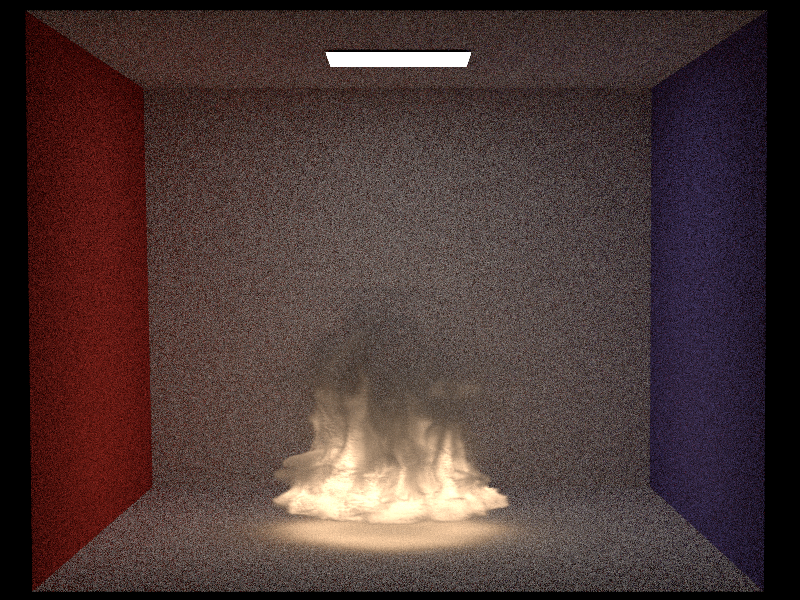

I aditionally implemented a class `VolumeEmitter`, inheriting from `Emitter` That does not feature on this diagram.
# Introduction
Emissive participating media crucial for creating out scattering and emissive volumes such as fires or blackbody radiation. As discussed in the Heterogeneous Media chapter, The Volumetric rendering Equation goes as follows:
$$
L(\textbf{x}, \vec{w}) = T_r(\textbf{x}, \textbf{x}_z)L(\textbf{x}_z, \vec{w})
+ \int_0^z T_r(\textbf{x}, \textbf{x}_t)\sigma_a(\textbf{x}_t)L_e(\textbf{x}_t, \vec{w}) dt
\\+ \int_0^z T_r(\textbf{x}, \textbf{x}_t)\sigma_s(\textbf{x}_t) \int_{S^2} f_p(\textbf{x}_t, \vec{w}', \vec{w})L_i(\textbf{x}_t, \vec{w}') d\vec{w}' dt
$$
With the term $\int_0^z T_r(\textbf{x}, \textbf{x}_t)\sigma_a(\textbf{x}_t)L_e(\textbf{x}_t, \vec{w}) dt$ being the accumulated emitted radiance from the participating medium.
This term is what I am focusing on in this feature, I will provide four new classes: `volpath_emissive.cpp`, `homogeneous_emissive.cpp`, `heterogeneous_emissive.cpp`, and `volumeemitter.cpp`.
I will commence by implementing a volumetric emitter, I will inspire myself the Mitsuba renderer. I then will integrate a pointer to an emitter as an attribute to media. I will do the necessary adaptations in `shape` and `scene` to accomodate the possibility of emitters in media. I will assume that emissive media can only be attributed to interior media of shapes.
I will write the homogeneous and heterogeneous emissive classes by adapting them to return radiance. And finally, I will adapt an integrator for emissive media.
Please note, initially I wanted to use the same concept for integration as my previously defined MIXED integrator, but I quickly relised that now that media is emissive, performing MIS only outside media and MATS inside media would quickly become biased, and that if I wanted to write an unbiased integrator I would need to write a fully MIS integrator in medium as well. Unfortunately, as this feature was the last feature of my project that I implemented, I was short on time and could not consider this option. Therefore, I decided to adapt my MATS integrator to accomodate emissive media.
Finally, I realise that it would have been more elegant to add the following implementations directly in my already written classes `volpath_mats`, `homogeneous` and `heterogeneous`, but as I had already validated them I preferred to make new classes in order to avoid messing them up in case of any bugs.
# Volume Emitter Class
I began by implementing a volume emitter class that can work for homogeneous emission as well as heterogeneous emission. It contains the following attributes :
- `m_radiance` containing the radiance (homogeneous case)
- `m_temperature` holding a pointer to a volume of temperature (heterogeneous case)
- `m_lightColor` defining the albedo of the temperature values in the heterogeneous case
- `m_homogeneous` a boolean defining if we are in the homogeneous or heterogeneous case.
- `m_scale` a float to scale the radiance values in case there are differences in measures between the vol file and Nori
This class also has the following methods :
- A constructor that is responsible for reading the radiance and light color values if given
- A destructor, `addChild`, and `activate` responsible for activating constructing and deleting the temperature grid if applicable
- `toString` a human readable string
- `samplePhoton` that simply throws an exception
- `eval` that returns the radiance at a given point
- `pdf` that simply returns the pdf of the sampled point (considering uniform distribution, so pdf = 1 / V)
- `sample` I actually will not use this method as I do not sample emitters in the emissive integrator, but I nonetheless implemented it. You may find the implementation details below
**sample Method**
As metioned in the introduction to this feature, I use the same methods as in the Mitsuba for sampling, i.e calculating a sampled vector within the bounding box of the shape. I begin by creating a 3rd random sample $z$ using the scaling method seen in the microfacet BSDF implementation in order to have a random Point3f. I then sample a point in the volume using the following formula :
$$
p = Min_{BBOX} + \vec{\xi}(Max_{BBOX} - Min_{BBOX})
$$
I then set all the other fields of the sample method similarly to arealight.cpp. The PDF of sampling a certain point is $\frac{1}{V}$.
Other Modifications :
- in the GridVolume class, I added a grid type attribute that is a string containing either "density" or "temperature"
- Add Emitter pointer attribute to `Medium.h` along with `isEmissive`, `getRadiance` and `getEmitter` (I implemented one const and one not const getEmitter methods as we need both for setting the emitter shape and adding the emitter to the list of scene emitters). I added the corresponding implementations to the children classes;
- In Shapes, I checked if the medium interior is emissive, if so I set the shape of the emitter to `this`.
- In the scene, I add the emitter light to the list of emitters
- Added empty addChild and activate methods to Emitter.h to accomodate adding a volume attribute for volume emitters
# Homogeneous and Heterogeneous Emissive Media
Both new emissive classes for homogeneous and heterogeneous media are practically identical to their absorption-only versions implemented in the previous feature. The main difference is the `evalRadiance` method
According to the formula listed above : $\int_0^z T_r(\textbf{x}, \textbf{x}_t)\sigma_a(\textbf{x}_t)L_e(\textbf{x}_t, \vec{w}) dt$, we notice that we are in a similar case as for the in-scattering implemented in the last feature : as we are searching for the weighted value, we have that the pdf and the transmittance will cancel out. This will, therefore return a constant value of $radiance*\frac{\sigma_a}{\sigma_t}$ at all points of the volume.
Therefore, in homogeneous media, I simply return this value by calling the eval method of the emitter, and using the constant attributes of the class. In the case of heterogeneous media, the idea is the same although we have to use the sigmaT specific to the sampled point. To avoid having to repeatedly look through the densities, I added a sigmaT field to the medium query records so that we may reuse the value found during distance sampling.
Other than this methos, I added an `activate` method to homogeneous emissive media to ensure that an emitter has been assigned.
# Adapted path tracer
For this class, the adaptation for emissive media was very straightforward. I simply copied the code from the `volpath_mats` class and added a check during the volume interaction to see if the medium is an emitter. If so, simply add the ratiance multiplied by the throughput to our final result.
# Results and Validation
The way to set up an emissive medium in an `.xml` scene is the following. Please remember it has to be and interior medium :
Unfortunately, I was unable to render emissive scenes in Mitsuba as references, as it seems my version of Mitsuba does not support volumetric emitters. I will therefore simply provide the results of the scenes rendered in `scenes/project/emissive/`
**Homogeneous Volume Emitter**
Made with heterogeneous medium combined with a homogeneous volume emitter
**Heterogeneous Volume Emitter**

How to set up an emissive heterogeneous media can be found in `scenes/emissive/emissive_heterogeneous.xml`. The above scene uses two .vol files, one that contains the densities, the other containing the temperatures.
Overall, I am quite happy with these results and encountered no major difficulties during their implementation, aside from not being able to provide references. Had I had more time, I would have loved to implement spectrally varying temperatures so as to have the light color vary throughout the smoke.